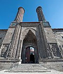

According to historians and linguists, the Proto-Turkic language originated in Central-East Asia. Initially, Proto-Turkic speakers were potentially both hunter-gatherers and farmers; they later became nomadic pastoralists. Early and medieval Turkic groups exhibited a wide range of both East Asian and West-Eurasian physical appearances and genetic origins, in part through long-term contact with neighboring peoples such as Iranic, Mongolic, Tocharian, Uralic, and Yeniseian peoples. During the 9th and 10th centuries CE, the Oghuz were a Turkic group that lived in the Caspian and Aral steppes. Partly due to pressure from the Kipchaks, the Oghuz migrated into Iran and Transoxiana. They mixed with Iranic-speaking groups in the area and converted to Islam. Oghuz Turks were also known as Turkoman.
he Seljuks originated from the Kınık branch of the Oghuz Turks who resided in the Yabgu Khaganate. In 1040, the Seljuks defeated the Ghaznavids at the Battle of Dandanaqan and established the Seljuk Empire in Greater Khorasan. Baghdad, the Abbasid Caliphate's capital and center of the Islamic world, was taken by Seljuks in 1055. Given the role Khurasani traditions played in art, culture, and political traditions in the empire, the Seljuk period is described as a mixture of "Turkish, Persian and Islamic influences". In the latter half of the 11th century, the Seljuk Turks began penetrating into medieval Armenia and Anatolia. At the time, Anatolia was a diverse and largely Greek-speaking region after previously being Hellenized.
The Seljuk Turks defeated the Byzantines at the Battle of Manzikert in 1071, and later established the Seljuk Sultanate of Rum. During this period, there were also Turkish principalities such as Danishmendids. Seljuk arrival started the Turkification process in Anatolia; there were Turkic/Turkish migrations, intermarriages, and conversions into Islam. The shift took several centuries and happened gradually. Members of Islamic mysticism orders, such as Mevlevi Order, played a role in the Islamization of the diverse people of Anatolia. In 13th century, there was a second significant wave of Turkic migration, as people fled Mongol expansion. Seljuk sultanate was defeated by the Mongols at the Battle of Köse Dağ in 1243 and disappeared by the beginning of the 14th century. It was replaced by various Turkish principalities.